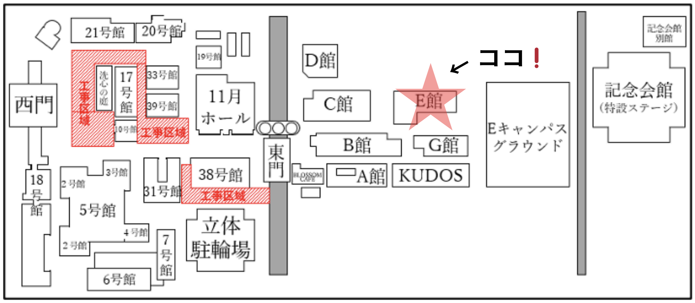

ある日突如として現れたデジタル異空間、
普段の生活では出入りのできない領域のはずの空間。
私たちが住んでいる地球とは全くの無縁の世界、放っておいても構わない世界。
しかし、あなたはデジタル異空間を見つけてしまった。
その世界を救う唯一無二の英雄になれるかもしれない存在になってしまった。
この世界の住人のために勇気を出してくれたあなたに救うことはできるだろうか。
その物語が今ここで始まる。
情報学部祭
デジタルフロンティア
日時
11/2（土）〜 11/4 (月)
10:00~19:00
ゲームアカウント作成
こちらから体験していただくゲームのアカウントを作成できます。
場所

E館1階 ロビー・・・受付
E館1階 101講義室前廊下・・・待機列
E館1階 101講義室・・・メインエリア
E館1階 i-CORE・・・ボスエリア